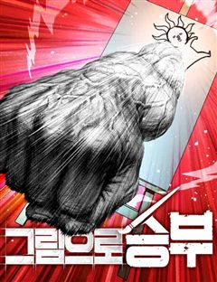
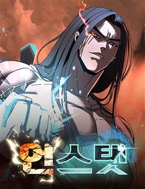
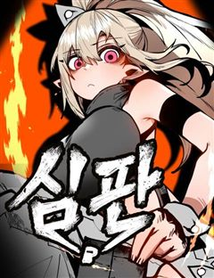
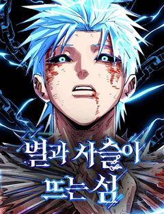
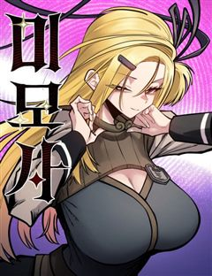
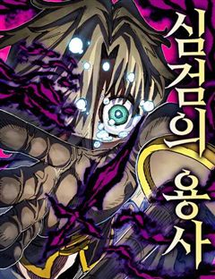
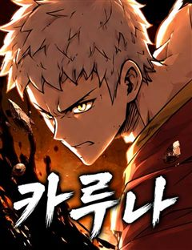
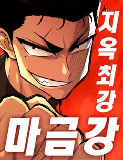
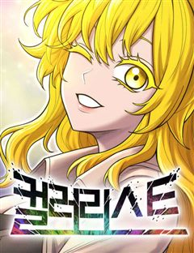

신의 탑 같은 웹툰 추천

신의 탑 · SIU
신의 탑 재밌게 봤다면 이 웹툰들도 좋아할 거예요. 같은 장르이면서 서바이벌, 이능력배틀물, 전쟁 같은 요소가 겹치는 작품을, 겹치는 요소가 많은 순서로 20개 골랐어요.
2026-10-04 기준 · 네이버웹툰·카카오웹툰·레진코믹스 · 성인 작품 제외
내 취향으로 직접 골라 추천받기 →-
1
 네이버웹툰
네이버웹툰백년게임
"당신의 게임은 여기까지군요" 백 년마다 열리는 소원 그 이상을 이뤄주는 대회, 최종 우승자는 단 한 명. 소년 한시준, 가족을 구하기 위해 모든 것을 걸고 치열한 전투에 뛰어든다.
서바이벌이능력배틀물소년왕도물배틀판타지네이버웹툰에서 보기 → -
2

-
3

네이버웹툰그림으로 승부
이계가 침공하는 세계, 그리고 히어로가 맞서는 세상. 오직 ‘그림’만 잘 그리는 약자 김군은 어린 시절부터 그려온 상상의 히어로 ‘마틴’을 현실로 소환한다. 힘이 아닌 창의력과 예술적 열정으로 세상을 지키는 소년의 성장 판타지 액션
이능력배틀물소년왕도물이능력먼치킨판타지액션네이버웹툰에서 보기 → -
4

네이버웹툰언스탯
이세계로 전송된 무협 최강의 남자 ‘아수라’ 오직 무력만으로 정점에 선 그는 오직 자신의 손만으로 스탯창과 탑을 부수며 플레이어로서의 참가를 거절한다.
배틀세계관모험먼치킨판타지액션네이버웹툰에서 보기 → -
5
 네이버웹툰
네이버웹툰사람의 탈
탈은 예술, 춤은 무술! 천대받는 탈춤광대 ‘봉산’은 스승이 남긴 지도를 따라 왕이 되려는 괴물 호랑이 ‘사풍흑호’를 막기 위해 전설 속의 '사람의 탈'을 찾아 모험을 떠나게 되는데 …
이능력배틀물소년왕도물모험먼치킨판타지네이버웹툰에서 보기 → -
6
 네이버웹툰
네이버웹툰왕의 힘으로 회귀한다
무시, 멸시, 괴롭힘이 당연한 비각성자의 삶. 빌어먹을 루저... 빌어먹을 인생... 빌어먹을 각성..! 그리고 빌어먹을 죽음의 순간, 나는 기이한 존재 '왕'을 만난다. 눈 부신 빛과 함께 다시 시작된 또 한 번의 삶. 하지만 이번에는 다르다. 이…
이능력배틀물배틀이능력먼치킨판타지액션네이버웹툰에서 보기 → -
7

네이버웹툰심판
법도 룰도 '강함'이 기준이 되는 초인 사회에서 약자로 살아온 소여울. 도망치는 것이 인생의 전부였던 소여울은, 강자들에게 아버지를 잃고 복수를 결심하며 격투 타워로 향한다.
이능력배틀물소년왕도물배틀이능력판타지액션네이버웹툰에서 보기 → -
8

네이버웹툰별과 사슬이 뜨는 섬
헌터의 꿈을 가졌지만 재능은 없는 만년 지망생 ‘기승현’. 그런 그의 앞에 12년간 혼수상태에 빠져있던 누나 ‘기소현’이 깨어나게 된다. 누나의 기상과 함께, 정체되어 있던 운명의 수레바퀴가 돌아가기 시작한다.
이능력배틀물소년왕도물배틀성장물판타지액션네이버웹툰에서 보기 → -
9

네이버웹툰미모사
세상 중심의 장막을 둘러싼 전쟁이 끝났다. 하지만 장막이 남긴 것은 전쟁뿐만이 아니었다. 장막을 쫓는 자, 장막을 닫으려는 자, 특별한 능력을 쓰는 자, 전쟁 병기, 치안을 어지럽히는 자, 희망을 가져다주는 자, 걸어온 삶을 부딪치는 자, 등에 멘…
이능력배틀물소년왕도물모험성장물판타지액션네이버웹툰에서 보기 → -
10

네이버웹툰심검의 용사
심검을 뽑을 수 있는 자들을 사람들은 '용사'라 부른다. 엘런은 용사가 되기 위해 여행을 떠나지만, 꿈꾸던 영웅의 실체는 잔혹한 살인 병기에 지나지 않았다. 엘런은 과연 현실을 이겨내고 진정한 용사가 될 수 있을 것인가?
이능력배틀물소년왕도물모험성장물판타지액션네이버웹툰에서 보기 → -
11
 네이버웹툰
네이버웹툰일렉시드
<노블레스> 손제호 작가와 <소녀더와일즈> 제나 작가가 만났다! 고양이 몸에 깃든 각성자 카이든과 각성능력을 숨겨온 고등학생 지우 러블리 2인조의 액션 판타지
이능력배틀물배틀세계관이능력액션네이버웹툰에서 보기 → · 일렉시드 같은 웹툰 → -
12

네이버웹툰카루나
돈과 과학이 교리인 집단 ‘뱅크’. 그들의 시설에서 자란 라만은 평생 잡역부로 살다 죽을 운명이었다. 그러던 어느 날, 악마와 얽힌 사건 속에서 뱅크가 철저히 부정해 온 ‘신의 힘’ 아스트라를 각성한다. 하루아침에 운명이 뒤집힌 라만은 악마를 사냥하…
소년왕도물배틀모험성장물판타지액션네이버웹툰에서 보기 → -
13
 네이버웹툰
네이버웹툰작두
미신따윈 믿지않는 주인공 '권용진'. 그의 만 16세의 생일이 지나자 눈 앞에 펼쳐진 믿을 수 없는 일들.
소년왕도물세계관이능력성장물판타지액션네이버웹툰에서 보기 → · 작두 같은 웹툰 → -
14

네이버웹툰지옥 최강 마금강
타고난 괴력으로 세상 무서울 것 없던 마금강, 힘의 한계를 시험해보다 지옥에 떨어졌다. 심지어 부모님까지? 원래 세계로 돌아가려면 지옥의 악인들을 쓰러뜨리고 최강자가 되어야 한다. 지옥을 박살 내며 올라서는 최강 격투 액션!
서바이벌이능력배틀물배틀먼치킨판타지액션네이버웹툰에서 보기 → -
15
 네이버웹툰
네이버웹툰나만 보는 탑 공략집
[당신은 공략집을 사용 하시겠습니까?] 어느 날 찾아온 의문의 메시지, 지구의 종말과 함께 생존 게임이 시작되었다. 서로를 '불신' 하게 하며, '다툼'을 일으키고, '파멸'에 이르기를 유도하는 탑 ···. 나는 결코 흔들리지 않을 것이다. 믿어주는…
배틀모험먼치킨성장물판타지액션네이버웹툰에서 보기 → -
16
 네이버웹툰
네이버웹툰세계멸망전
천마, 헌터, 거대 로봇, 마왕, 초인. 각 세계의 존망을 걸고 한자리에 모인 최강자들. 패배의 대가는 오직 세계의 멸망뿐인 생존 전쟁 속, 유일하게 아무런 능력도 없는 '일반 세계' 대표들이 끌려온다. 규격 외 괴물들의 압도적인 무력에 짓밟히기 직…
이능력배틀물배틀세계관이능력판타지액션네이버웹툰에서 보기 → -
17
 네이버웹툰
네이버웹툰정글쥬스
의문의 벌레약 ‘정글쥬스’로 인해 곤충인간이 되었다. 이를 숨기며 살던 대학생 장수찬은 어느 날 그 모습을 모두에게 보이게 되고, 곤충인간들의 사회로 들어가 약육강식의 논리와 맞서 싸우게 되는데... 각양각색 곤충능력자들의 판타지 액션 슈퍼스트링 유…
이능력배틀물배틀이능력먼치킨판타지액션네이버웹툰에서 보기 → · 정글쥬스 같은 웹툰 → -
18
 네이버웹툰
네이버웹툰보이드맨
신들이 지배하는 포스트 아포칼립스. 가족을 앗아간 신을 죽이기 위해, 난 죽음으로 들어갔다. “공허여, 내게 힘을 빌려줘. 신을 죽일 수 있는 힘을...!”
세계관모험먼치킨성장물판타지액션네이버웹툰에서 보기 → -
19

네이버웹툰컬러리스트
검게 물든 세상. 검은 마녀로 인해 인류는 빛과 색이 모인 거대도시로 내몰린다. 세상을 되찾기 위해 개척을 이어가는 인류와 그 개척단의 일원이 되려는 소년 케이. 하지만 색을 가지지 못한 무색인이라는 이유로 배척받는다. 그러던 어느 날 케이는 불의의…
이능력배틀물소년왕도물이능력판타지액션네이버웹툰에서 보기 → -
20
 네이버웹툰
네이버웹툰해피 페이스
투기장에서 노예로 자란 해피는 괴물 같은 실력으로 생존해왔다. 투기장 주인이 사형되는 사건이 생기며 해방된 해피는 새로운 가족과 친구들을 만나며 조금씩 사회를 배워간다. 하지만 세상은 해피에게 싸움을 멈출 기회를 주지 않았다. 자신의 신분, 범죄와의…
소년왕도물배틀모험먼치킨판타지액션네이버웹툰에서 보기 →